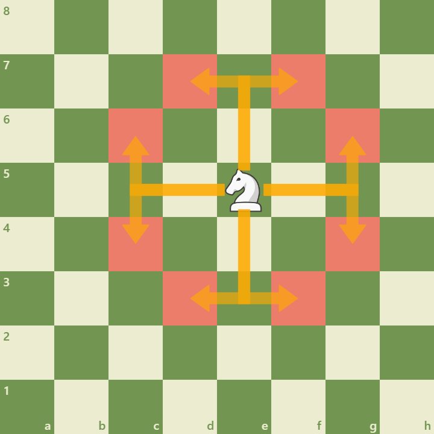

Knight in Chess: The Jumper
KNIGHT
Knights move in an L shape: two squares in one direction then one perpendicular. They jump over pieces and excel in closed positions.
Key Characteristics:

Movement L-shaped jumps; can leap over pieces.
Outposts Knights on stable outposts are extremely powerful, especially near the enemy king.
Strategic Importance:
- Closed Positions Knights benefit from pawn chains and blocked lines.
- Forks Knights create tactical forks that win material.
- Coordination Works well with bishops and pawns for powerful maneuvers.
Mastering knight jumps and recognizing outposts helps unlock many tactical opportunities.